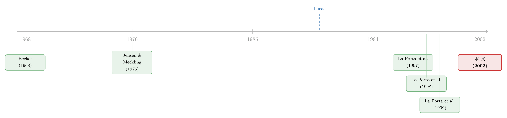

把法律写成一个「被抓的概率」：投资者保护如何长出一国的股市
本文读的是 Shleifer & Wolfenzon (2002, Journal of Financial Economics)：他们把 Becker 的「犯罪与惩罚」框架塞进 Jensen-Meckling 的代理环境，用一个参数 k（被抓到的概率）代表一国的投资者保护水平，再让一个想上市的创业者去解一道「偷多少、卖多少、做多大」的最优化。结论是——这一个简单模型，竟同时长出了实证文献里关于投资者保护的全部八条经验规律。
1 一个让人不安的清单
先讲一个让做实证的人既兴奋又有点不安的事实。
进入二十一世纪的头几年，公司金融领域积累了一长串关于「投资者保护」的跨国经验规律。法律对小股东保护得越好的国家，往往：(1) 股票市场更值钱（La Porta et al., 1997）；(2) 上市公司数量更多；(3) 公司规模更大（Kumar et al., 1999）；(4) 估值（Tobin's Q）相对资产更高（Claessens et al., 2002; La Porta et al., 2002）；(5) 分红更慷慨（La Porta et al., 2000a）；(6) 所有权与控制权更分散（La Porta et al., 1999）；(7) 控制权私利（private benefits of control）更低（Zingales, 1994; Nenova, 1999）；(8) 投资机会与实际投资的相关性更高（Wurgler, 2000）。
八条规律，整整齐齐。问题来了：它们是八个互不相干的发现，还是同一根弦上拨出的八个音？
这正是石川式的张力所在——实证跑在了理论前面。当时已经有不少模型分别去刻画其中的某一个侧面：有人专门建模大股东对小股东的掏空（Grossman and Hart, 1988; Burkart et al., 1998），有人解释为什么差保护的国家里控制权如此集中（Zingales, 1995; La Porta et al., 1999），有人论证金字塔结构为何普遍（Wolfenzon, 1999）。可这些都是「专题片」。一个能把融资、估值、所有权、分红、上市数量一起装进去的市场均衡模型，却始终缺席。
Shleifer 和 Wolfenzon 想补上的，就是这块拼图。
2 真正关键的一步：把「法律」翻译成「概率」
接着，一个自然的问题是：投资者保护到底是个什么东西？它是法条、是法院、是执法，是一团说不清道不明的制度。怎么把它塞进一个能求导的模型？
这篇论文最漂亮的一招，就在这里。
它借用了 Becker（1968）的「犯罪与惩罚（crime and punishment）」框架：一个理性的罪犯会权衡犯罪收益与「被抓到的概率 × 惩罚」。Shleifer-Wolfenzon 把这套逻辑原封不动地搬进公司里——创业者偷钱（diversion）就是「犯罪」，而投资者保护，就被定义成创业者被抓到的概率 k。k 越高，法律越严。
这一步翻译的妙处在于：它把一个制度概念，压缩成了一个 [0,1] 区间上的标量。于是「跨国差异」就变成了「k 不同」，整套比较静态（comparative statics）瞬间可做。这也是 Becker（1968）那篇经济学经典在公司金融里的一次精彩转世。
而模型的另一半骨架，来自 Jensen 和 Meckling（1976）：创业者卖掉的现金流权比例越高，他自己留下的「皮」越薄，于是越有动机去损公肥私——这就是经典的代理成本。（关于这条主线，可参见《债务这副药，为什么不能全吃？——重读 Jensen 和 Meckling 五十年》。）
两块积木一拼：Becker 决定「偷了会怎样」，Jensen-Meckling 决定「为什么想偷」。一个市场均衡的公司金融模型，就这样搭起来了。
3 模型：一个创业者的两期算盘
我们把模型一步步拆开。世界里有 C 个国家，每国有 J 个风险中性的创业者。为聚焦于投资者保护，假设各国的创业者「池子」完全相同——同样的初始财富 W 与同样的项目生产率 g。差别只在一个地方：国家的保护水平 k。
模型有两期。日期 1，创业者 E 决定是否设立公司。他从自有财富里投入 R_E ≤ W_1，再通过出售公司现金流权的比例 x、从市场募集 R_M，把总额 I ≤ R_E + R_M 投入项目。生产函数是规模报酬不变的：每投入一美元，到日期 2 产出 1+g 美元。于是日期 2 的收入为
$$P = (1+g)\,I + (1+i)\,(R_E + R_M - I).$$
这里 i 是市场利率：投进项目的部分赚 g，没投进去的余款则按市场利率 i 生息。
日期 2，收入实现，E 选择偷走其中的比例 d。他以概率 k 被抓——一旦被抓，要把偷的钱吐回公司，还要额外缴一笔罚款 f(d)P；若没被抓，偷的钱归他，剩下没偷的 (1-d)P 作为分红派发。把两种情形按概率加权，E 在日期 2 的期望收益是
$$(1-x)\bigl(1-(1-k)d\bigr)P + (1-k)\,d\,P - k\,f(d)\,P + (1+i)(W_1 - R_E).$$
第一项是他作为「留守大股东」分到的期望股息，第二项是期望被他截留的偷窃额（只有 1-k 的概率留得住），第三项是期望罚款，最后一项是他投在市场上那部分财富的本息。
3.1 偷多少？——一道「犯罪与惩罚」的边际题
倒着解。日期 2，E 选 d 最大化收益，一阶条件（FOC）干净得惊人：
左边是偷窃的边际成本：再偷一美元，罚款增加 f'(d)，而这笔罚款以概率 k 缴纳。右边是偷窃的边际收益：多偷一美元，就少向外部股东分掉其中的比例 x，但这一美元只有 1-k 的概率真正落袋。
这条 FOC 就是整篇论文的「核反应堆」。从它出发，Proposition 1 立刻给出三件事：
d*(0, k) = 0：当x=0（没有外部股东），E 独享全部股息，没有任何理由去冒险偷窃。d*关于x递增（d*_1 > 0）：外部股东持股越多，偷窃的边际收益越高——这正是 Jensen-Meckling（1976）的老结论，所有权越集中，行为越「干净」。d*关于k递减（d*_2 < 0）：保护越好，偷窃既更贵（更常被罚）又更不划算（更难留住赃款）。
更进一步，期望偷窃额 (1-k)d*P 在高保护国家里更低——因为 d* 本身更低，而且赃款被追回的概率更高，双重下压。
3.2 一个反直觉的推论：估值与分红，都是「偷窃的影子」
由此，论文导出 Tobin's Q 的表达式：
$$\text{Tobin's Q} = \bigl(1 - d^*(1-k)\bigr)(1+g).$$
期望分红除以投资额也是 (1 - d*(1-k))(1+g)，而期望控制权私利除以投资额则是 d*(1-k)(1+g)。于是 Corollary 1 一气呵成：控制住所有权集中度与成长机会后，保护越好的国家，Tobin's Q 越高、分红越多、控制权私利越低——经验规律 (4)(5)(7) 被同一个 d* 一网打尽。
这就是石川式的「反转」：你以为估值、分红、私利是三件事，模型告诉你它们只是 d*(1-k) 这一个量的三张脸。期望偷窃额上去，三者一起动。
3.3 卖多少、做多大？——日期 1 的取舍
回到日期 1。设 r(x,k) = x(1 - (1-k)d*(x,k))，是外部股东期望拿到的收入比例；他们理性，所以只愿出 R_M = [r(x,k)/(1+i)]P。当项目生产率 g > i（值得做）且每美元投资的募资额 r(x,k)(1+g)/(1+i) < 1（募不到无穷大），创业者的目标函数可以漂亮地改写成
$$\max_{x,\,I}\ \Bigl\{\tfrac{1+g}{1+i} - 1 - k\,f\bigl(d^*(x,k)\bigr)\tfrac{1+g}{1+i}\Bigr\}\,I + \tfrac{1+g}{1+i}\,W_1,$$
且 I* = W_1 / (1 - r(x*,k)(1+g)/(1+i))。
读懂这个式子，整篇论文就通了。(1+g)/(1+i) - 1 是每美元投资的净现值（NPV）——由于投资者只要市场回报 i，项目的全部 NPV 都归创业者。而 k f(d*)(1+g)/(1+i) 是每美元投资的期望罚款现值，是创业者要替自己的「贼性」付的代价。
于是 x 的取舍浮出水面：卖得多（x 大），既能募更多钱、把项目做大，又会推高偷窃、招来更重的罚款。在最优处（对应论文的 Eq. (5)），创业者让两者的边际相等。这里有个隐藏的关键——x 对募资额有两个反向作用：数量效应（卖得多）与价格效应（偷得多→股价跌）。最优解必然落在「数量效应压过价格效应」的区域，否则 E 完全可以少卖一点，既减罚款又增募资，岂不更好？
4 把个体决策推到均衡：八条规律一次收官
接着，把这道个体决策嵌入市场均衡（供给来自不愿设厂的创业者，需求来自要募资的公司），就得到了全文的主命题。
Proposition 4：比较两个只在保护水平上不同的国家 H 与 L（k_H > k_L），国家 H 会有：(a) 更低的所有权集中度（对所有 j，x*_{j,H} > x*_{j,L}）；(b) 更大的外部资本市场（Σ R^M_{j,H} > Σ R^M_{j,L}）；(c) 更大的公司（I*_{j,H} > I*_{j,L}）。这对应经验规律 (6)(1)(3)。
这里 (b) 一点都不显然。保护好→卖更多股，但市场规模是用美元算的，而分散又压低股价，所以「保护好的国家市场更大」并非先验成立。论文的论证正是上面那句话：均衡必在数量效应主导区，所以更高的 x 一定意味着更大的市场。
Proposition 5：若上市有一笔固定成本 c（投行费、挂牌费），那么保护越好的国家，越多公司选择上市——对应规律 (2)。而且这笔成本会放大跨国差异：那些在差保护国家「本可上市却选择留守」的公司，会把所有权集中度和市场规模的国别差距撑得更大。
至此，引言里那张八条规律的清单，被同一个模型逐条认领。这是这篇论文真正的野心，也是它的分量所在。
5 走得更远：资本为什么不从富国流向穷国？
但论文没有止步于「解释存量」。它把模型推向了两个更大的舞台。
其一，Lucas（1990）之谜。 新古典理论说资本应当从富国（回报低）流向穷国（回报高），可现实里这种流动少得可怜。在这个模型里答案很自然：穷国往往保护差、k 低，外部融资天然受限，于是即便项目回报 g 更高，外部资本也不敢大举涌入——因为它知道，进去的钱会被偷走一块。
其二，改革的政治经济学。 模型预测：当一国对外开放资本流动时，创业者从「改善投资者保护」中获益更多（或损失更少）。直觉是，开放降低了改善保护所带来的利率上升压力（资本可以从全球涌入），所以改革对本地创业者更有利。于是模型推出一个可检验的政治含义——开放的国家，创业者更有动机用政治影响力去推动保护改革。这与 Rajan 和 Zingales（2001）「开放与金融发展正相关」的证据一致。
6 文献脉络
把镜头拉远，这篇论文坐在一条清晰的脉络上。
源头是两块基石：Becker（1968）给了「被抓概率 × 惩罚」的犯罪经济学，Jensen 和 Meckling（1976）给了「卖股权→代理成本」的公司金融环境。中间，Lucas（1990）抛出了富国-穷国资本流动之谜，悬而未决。
真正点燃这条线的，是 La Porta、Lopez-de-Silanes、Shleifer、Vishny 的「法律与金融（law and finance）」三部曲：1997 年的《Legal Determinants of External Finance》把「法律保护→外部融资」第一次量化进跨国数据，1998 年的《Law and Finance》给出法系起源的刻画，1999 年的《Corporate Ownership Around the World》记录了所有权集中度的跨国差异。实证的八条规律，大半出自这一系。（关于法律起源更深的「地理-禀赋」根源，可参见《法律是行李，风土是地基》。）

本文（Shleifer and Wolfenzon, 2002）的位置，就是给这一堆实证规律提供一个统一的理论引擎。它不发明新数据，而是证明：只要承认「投资者保护 = 被抓概率」，八条规律全是同一道最优化的副产品。后来的跨上市「绑定假说（bonding hypothesis）」文献——把股票挂到纽约、租用一部更严的法律——正是这套逻辑的延伸（见《把股票挂到纽约，老板就少偷一点》 与《租来的法律：把股票挂到纽约，真能管住自家的老板吗？》）。
7 评论与延伸（Q&A + 研究方向）
(a) 几个可能的疑问
Q：把「投资者保护」简化成一个被抓概率 k，是不是太粗暴了？
确实粗暴，但这是有意的取舍。论文在脚注里说明，结论在更一般的设定下依然成立：只要偷窃成本
c(d,k) = g(k)f(d)且g'(k) > 0（保护越好、偷窃越贵），假设 (a)–(d) 下的全部结果都不变。k只是把「执法概率、罚款力度、监督强度」打包成的一个标量，目的是换取整套比较静态的可解性。代价是它无法区分「法条」与「执法」这两件在现实里很不一样的事。
Q：为什么作者要刻意排除「重典治贼」（boil them in oil）？
假设 (d) 给罚函数二阶导的增速设了上限，正是为了排除「只要罚得够狠，即使被抓概率极低也能完全杜绝偷窃」这种角点解。作者的理由很现实：公平、财富约束、错判风险、以及强势被告颠覆司法的可能，使得极端高额的民事罚款在多数国家并不存在。技术上，这个假设还保证了日期 1 最大化问题的良态（well-behaved），让
d*_1不至于变化过快。
Q：模型说项目的 NPV「全归创业者」，这不奇怪吗？外部股东岂不是白干？
不奇怪，这恰是规模报酬不变 + 投资者理性的自然结果。外部股东是竞争性的，他们只要求市场回报
i，所以会把预期被偷的部分提前折进出价里（R_M = r(x,k)P/(1+i)）。创业者拿走全部剩余 NPV，但同时承担全部期望罚款。换句话说，外部股东不亏，是创业者在替自己的偷窃倾向买单——这也是为什么差保护下他宁可把公司做小、少卖股。
Q：Proposition 4(b)「保护越好、市场越大」为什么不是废话？
因为分散（卖更多股）会压低股价，而市场规模是按美元计的，两个力量方向相反。论文的关键论证是：均衡一定落在「数量效应主导」的区域——否则创业者可以少卖一点，同时减少罚款并增加募资，严格更优。所以更高的均衡
x必然对应更大的美元市场。这是个容易被忽略、却需要认真证的点。
Q：这模型能解释「金字塔」「双层股权」这些控制权结构吗？
不能，也不打算。论文明确假设创业者无论卖出多少现金流权都保留控制权，并把所有权结构对保护的反馈（比如第二大股东的监督会提高有效
k）排除在外，以保持简洁。金字塔、交叉持股、多个大股东这些更细的控制权工程，留给了 Wolfenzon（1999）、Bennedsen and Wolfenzon（2000）等专题模型。
Q：八条规律都被「解释」了，会不会是模型自由度太高、什么都能拟合？
这是对任何「大一统」理论的合理警惕。但要注意，模型只有很少的几个原始参数（
W, g, k, i和罚函数f），八条规律不是被分别校准出来的，而是从同一道最优化里联立导出的——它们之间还有内部一致性约束（比如 Q、分红、私利共享同一个d*(1-k)）。真正的检验不在「能否解释存量」，而在 Proposition 2、4(b)、以及开放-改革那条政治含义这些新预测上。
(b) 几个可能的研究问题与提案
1. 把「被抓概率 k」搬到公司债/信用市场。
【经济故事】模型里
k决定了股权外部融资的规模。一个自然的平移是：投资者保护（尤其是债权人保护与破产执行效率）如何决定一国公司债市场的深度与定价？掏空小股东与稀释债权人是同源的代理问题，但债的支付结构是凸的，偷窃对债与对股的影响并不对称。 【可行性】中。债权人权利指数（La Porta et al.）、跨国公司债发行与利差数据（如 Refinitiv/Bloomberg）都可得；识别上可借助破产法改革做事件研究。难点在于把「被抓概率」干净地映射到债券契约的可执行性。
2. 用跨上市做「k 的外生跳变」实验。
【经济故事】绑定假说说，挂牌纽约 = 把自家的
k一次性调高。模型给出可检验的横截面预测：来自越差保护母国的公司，跨上市后的估值提升、所有权分散、募资扩张应当越大（因为它们的Δk更大）。 【可行性】高。这正是 La Porta 系与绑定文献已铺好的路（见《同一家公司，两种股票，两个价格》）。可用 DiD + 母国保护强度的交互项，识别相对干净；主要威胁是自选择——什么样的公司选择去绑定。
3. 给「期望偷窃额」找一把直接的尺子。
【经济故事】模型的核心潜变量是
d*(1-k)，但它在数据里几乎不可观测。能否用大宗股权交易的「控制权溢价」或投票权价差，结构化地把每家公司、每个国家的d*反解出来？ 【可行性】中高。已有用拍卖、用双层股权价差量「掏空」的尝试（见《拍卖桌上量出来的「掏空」》）。把这类测度与模型的d*(x,k)函数形式对接，是一篇结构估计论文的雏形。
4. 检验「开放→改革」的政治预测。
【经济故事】模型预测开放资本账户的国家，创业者更有动机推动保护改革。这是一条可证伪的政治经济学含义，而且方向明确。 【可行性】中。资本账户开放度（Chinn-Ito 等）、投资者保护指数的时间序列、以及改革立法的时点都可得；可用面板 + 国家固定效应。识别难点是开放本身的内生性——往往与一揽子改革同时发生，需要找到只影响开放、不直接影响保护的工具。
8 我的判断
这篇论文的贡献，是「用一个参数统一一片实证」的典范。它的优雅不在数学深度，而在翻译的精准：把「投资者保护」这团制度迷雾，压成一个 Becker 式的被抓概率，再让一个 Jensen-Meckling 式的创业者去解最优化，于是八条看似独立的经验规律，被证明只是同一道方程的八个投影。对任何想把「制度」装进模型的人，这都是一堂示范课。
但要对识别（这里更准确地说是「映射」）保持清醒。最大的隐忧是 k 这个标量太能装——它同时代表执法概率、罚款力度、监督强度，而这些在现实里可以南辕北辙（法条很严但执法松弛的国家比比皆是）。模型也刻意回避了控制权工程（金字塔、双层股权）、债权人保护、以及所有权结构对保护的内生反馈，这些恰恰是后来文献里最热闹的地方。换句话说，这个模型解释了为什么差保护国家股市小，却没说清差保护国家的人会用什么结构去绕过它。
后续我最想看到的，是把这套框架推向信用市场与外资持有人：当外部资本是债而非股、当外部投资者是不熟悉本地法律的外国人时，「被抓概率」这把尺子还量得准吗？以及，能否真的把那个看不见的 d*(1-k) 从价格里结构化地解出来——毕竟，整篇论文最迷人的量，恰恰是数据里最难看见的那一个。
参考文献
- Becker, G. S. (1968). Crime and Punishment: An Economic Approach. Journal of Political Economy 76, 169–217.
- Burkart, M., Gromb, D., Panunzi, F. (1998). Why Higher Takeover Premia Protect Minority Shareholders. Journal of Political Economy 106, 172–204.
- Claessens, S., Djankov, S., Fan, J., Lang, L. (2002). Disentangling the Incentive and Entrenchment Effects of Large Shareholdings. Journal of Finance 57, 2379–2408.
- Jensen, M., Meckling, W. (1976). Theory of the Firm: Managerial Behavior, Agency Costs, and Ownership Structure. Journal of Financial Economics 3, 305–360.
- Kumar, K., Rajan, R., Zingales, L. (1999). What Determines Firm Size? NBER Working Paper 7208.
- La Porta, R., Lopez-de-Silanes, F., Shleifer, A., Vishny, R. (1997). Legal Determinants of External Finance. Journal of Finance 52, 1131–1150.
- La Porta, R., Lopez-de-Silanes, F., Shleifer, A., Vishny, R. (1998). Law and Finance. Journal of Political Economy 106, 1113–1155.
- La Porta, R., Lopez-de-Silanes, F., Shleifer, A. (1999). Corporate Ownership Around the World. Journal of Finance 54, 471–517.
- La Porta, R., Lopez-de-Silanes, F., Shleifer, A., Vishny, R. (2002). Investor Protection and Corporate Valuation. Journal of Finance 57, 1147–1170.
- Lucas, R. (1990). Why Doesn't Capital Flow from Rich to Poor Countries? American Economic Review Papers and Proceedings 80, 92–96.
- Nenova, T. (1999). The Value of a Corporate Vote and Private Benefits: A Cross-country Analysis. Working Paper, Harvard University.
- Rajan, R., Zingales, L. (2001). The Great Reversals: The Politics of Financial Development in the 20th Century. NBER Working Paper 8178.
- Shleifer, A., Wolfenzon, D. (2002). Investor Protection and Equity Markets. Journal of Financial Economics 66, 3–27.
- Wolfenzon, D. (1999). A Theory of Pyramidal Ownership. Working Paper, Harvard University.
- Wurgler, J. (2000). Financial Markets and the Allocation of Capital. Journal of Financial Economics 58, 187–214.
- Zingales, L. (1994). The Value of the Voting Right: A Study of the Milan Stock Exchange. Review of Financial Studies 7, 125–148.
- Zingales, L. (1995). Inside Ownership and the Decision to Go Public. Review of Economic Studies 62, 425–448.